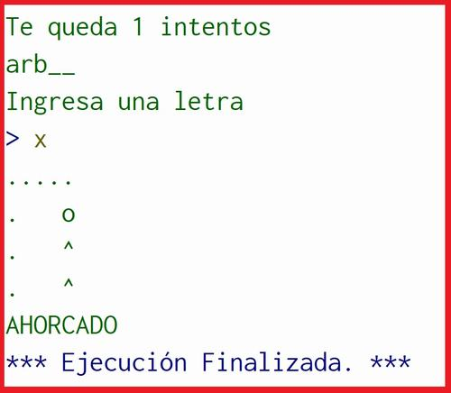

Experiencia Laboral:
-----sin experiencia laboral en este momento
Mis Estudios
Descripción de mis estudios:
Primario 2010 - 2017 : Maestro José Dionisio Fernandez 1-123.
Secundario 2018 - 2022 : Manuel Ignacio Molina 4-087. Egresada con Bachillerato en Ciencias Naturales y Salud
Nivel Superior 2024 - 2025 : Técnico Universitario en Programación- UTN facultad regional San Rafael
Primer año 2024 de cursado de la carrera en programción donde podemos ver el analisis de problemas de datos, desarrollo de programas en lenguajes como Python, JavaScript, Java y Git-Bash, y el analisis de sistemas de computación.
Proyectos

Proyecto 1: Ahorcado en Pseint
Es un juego donde un jugador introduce una palabra secreta, y otro jugador intenta adivinarla letra por letra. Si se equivoca, aparecerá el dibujo del ahorcado.
Ver más GitHub Tecnologia